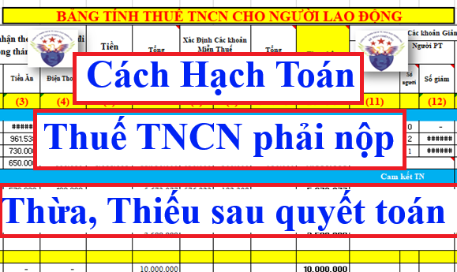
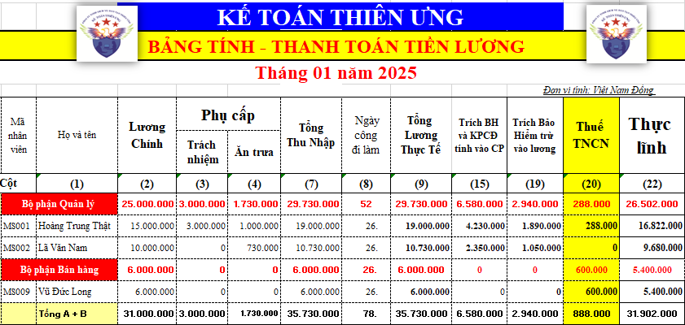

Hướng dẫn cách hạch toán tiền thuế thu nhập cá nhân phải nộp, phải khấu trừ vào tiền lương của người lao động, tiền thuế TNCN nộp thừa, nộp thiếu sau khi làm quyết toán thuế TNCN
Cách hạch toán thuế TNCN theo thông tư 133/2016/TT-BTC và thông tư 200/2014/TT-BTC

Theo Điều 41 của thông tư 133/2016/TT-BTC hướng dẫn về Tài khoản 333 - Thuế và các khoản phải nộp nhà nước
và
Theo Điều 52 của thông tư 200/2014/TT-BTC hướng dẫn về Tài khoản 333 - Thuế và các khoản phải nộp nhà nước
thì:
và
Theo Điều 52 của thông tư 200/2014/TT-BTC hướng dẫn về Tài khoản 333 - Thuế và các khoản phải nộp nhà nước
thì:
Tài khoản sử sụng để hạch toán thuế TNCN là Tài khoản 3335: Phản ánh số thuế thu nhập cá nhân phải nộp, đã nộp và còn phải nộp vào Ngân sách Nhà nước.
Cách hạch toán các nghiệp vụ kinh tế phát sinh liên quan đến thuế TNCN như sau:
Kết cấu của Tài khoản 3335:
| Bên Nợ: |
TK 3335 |
Bên Có: |
| Số thuế TNCN đã nộp vào Ngân sách Nhà nước; | Số thuế TNCN phải nộp vào Ngân sách Nhà nước. | |
|
TK 3335 có thể có số dư bên Nợ: Số dư bên Nợ (nếu có) của TK 3335 phản ánh số thuế TNCN đã nộp lớn hơn số thuế TNCN phải nộp cho Nhà nước |
Số dư bên Có:
Số thuế TNCN còn phải nộp vào Ngân sách Nhà nước.
|
1. Hạch toán thuế TNCN phải nộp:
Đối với thu nhập từ tiền lương tiền công thì: tại thời điểm chi trả thu nhập thì doanh nghiệp sẽ phải thực hiện tính thuế TNCN cho người lao động => Nếu thu nhập của người lao động đến mức phải khấu trừ thuế TNCN thì trước khi chi trả thu nhập cho người lao động, doanh nghiệp sẽ phải thực hiện khấu trừ tiền thuế TNCN (trừ số tiền thuế TNCN đó vào lương trước khi trả lương)
Chi tiết về cách tính Thuế TNCN thì các bạn xem tại đây: Cách tính thuế thu nhập cá nhân
Chi tiết về cách tính Thuế TNCN thì các bạn xem tại đây: Cách tính thuế thu nhập cá nhân
Căn cứ vào bảng lương, bảng tính thuế TNCN để hạch toán số thuế TNCN phải nộp, phải khấu trừ như sau:
Nợ TK 334: Phải trả người lao động (Tiền lương)
Có TK 3335: Thuế TNCN
Các bạn có thể tham khảo bảng lương và bảng tính thuế TNCN tại đây:
Ví dụ 1: Ngày 10/05/2025, công ty Diệu Tâm ký hợp đồng thử việc 15 ngày với chị Hồng
Khi kết thúc thời gian thử việc chị Hồng nhận được mức tiền lương là 2.500.000đ
Do chị Hồng ký hợp đồng thử việc nên phải tính thuế TNCN theo tỷ lệ 10%
Số thuế TNCN phải khấu trừ = 2.500.000 x 10% = 250.000đ
=> Hạch toán số thuế TNCN phải khấu trừ vào lương của chị Hồng như sau:
Do chị Hồng ký hợp đồng thử việc nên phải tính thuế TNCN theo tỷ lệ 10%
Số thuế TNCN phải khấu trừ = 2.500.000 x 10% = 250.000đ
=> Hạch toán số thuế TNCN phải khấu trừ vào lương của chị Hồng như sau:
Nợ TK 334: 250.000
Có TK 3335: 250.000
Ví dụ 2: Tại tháng 1/2025, công ty Diệu Tâm có bảng lương như sau:

Nhìn vào bảng thanh toán tiền lương trên các bạn đang thấy có phát sinh số thuế TNCN phải khấu trừ là 888.000đ
=> Căn cứ vào bảng thanh toán tiền lương tháng 1/2025, công ty Kế Toán Diệu Tâm sẽ hạch toán số thuế TNCN phải khấu trừ của toàn bộ người lao động như sau:
Nợ TK 334: 888.000
Có TK 3335: 888.000
(Lưu ý: Khi các bạn hạch toán Thuế TNCN theo bảng lương thì không cần hạch toán thuế TNCN chi tiết cho từng người, vì khi hạch toán tiền lương các bạn cũng đang không hạch toán chi tiết cho từng người)
2. Khi doanh nghiệp nộp số tiền thuế TNCN đã khấu trừ của người lao động vào Ngân sách Nhà nước thì hạch toán:
Nợ TK 3335: Thuế thu nhập cá nhân
Có TK 112: Số tiền đã nộp (Nếu nộp bằng tiền mặt thì hạch toán Nợ TK 111)
Ví dụ 3: (Tiếp theo ví dụ 2 bên trên) Khi công ty Kế Toán Diệu Tâm nộp số tiền thuế TNCN đã khấu trừ là 888.000đ của NLĐ tại tháng 1/2025 về Ngân sách Nhà nước bằng tiền gửi ngân hàng (nộp thuế điện tử) thì sẽ hạch toán:
Nợ TK 3335: 888.000
Có TK 112: 888.000
3. Cáchh toán tiền thuế TNCN nộp thừa, nộp thiếu sau khi làm quyết toán thuế TNCN
Thuế TNCN là loại thuế có kỳ tính thuế theo năm nhưng trong năm hàng tháng hoặc hàng quý DN đã phải kê khai và nộp số thuế TNCN đã khấu trừ trong tháng hoặc quý đó về NSNN
Đến cuối năm thì thực hiện làm tờ khai QTT để xác định số thuế TNCN phải nộp của cả năm. Nếu có phát sinh NỘP THỪA hoặc NỘP THIẾU tiền thuế TNCN thì Căn cứ vào kết quả của tờ khai QTT TNCN mẫu 05/QTT-TNCN để hạch toán:
Cụ thể từng trường hợp như sau:
+ Bút toán 2: Khi nhận được số tiền thuế TNCN đã đề nghị hoàn:
Cụ thể từng trường hợp như sau:
3.1. Nộp thiếu tiền thuế TNCN
Khi nào thì doanh nghiệp nộp thiếu tiền thuế TNCN? Đó là khi:
Số thuế TNCN đã nộp trong năm < Số thuế TNCN phải nộp khi quyết toán
Cách xác định theo tờ khai QTT TNCN như sau:
Số thuế TNCN đã nộp trong năm < Số thuế TNCN phải nộp khi quyết toán
Cách xác định theo tờ khai QTT TNCN như sau:
Trên tờ khai QTT TNCN mẫu 05/QTT-TNCN: Có số tiền phát sinh tại chỉ tiêu số 40 - Tổng số thuế TNCN còn phải nộp
Khi nộp thiếu tiền thuế thì sẽ phải nộp thêm số tiền thuế nộp thiếu đó về NSNN:
Bút toán 1: Hạch toán số thuế TNCN còn phải nộp thêm sau quyết toán:
Bút toán 1: Hạch toán số thuế TNCN còn phải nộp thêm sau quyết toán:
+ TH1: Trừ vào lương của người lao động thì hạch toán:
Nợ TK 334: Nếu số thuế TNCN nộp thêm được lấy từ lương của NLĐ (trừ vào lương)
Có TK 3335: Số thuế TNCN phải nộp thêm theo quyết toán
+ TH2: Thu thêm tiền của người lao động thì hạch toán:
Nợ TK 111/112: Nếu NLĐ đóng số thuế TNCN còn phải nộp thêm đó bằng tiền mặt hoặc CK
Có TK 3335: Số thuế TNCN phải nộp thêm theo quyết toán
+ TH3: Doanh nghiệp nộp thuế TNCN thay cho người lao động thì hạch toán:
Nợ TK 641/642/622/627…: Nếu doanh nghiệp đóng thay số thuế TNCN còn phải nộp thêm đó cho NLĐ (Lương NET) (Thông tư 133 dùng các TK 154/6421/6422...)
Có TK 3335: Số thuế TNCN phải nộp thêm theo quyết toán
Bút toán 2: Khi nộp số thuế TNCN còn thiếu đó về NSNN
Nợ TK 3335: Thuế thu nhập cá nhân còn phải nộp thêm sau quyết toán
Có TK 112: Số tiền đã nộp (Nếu nộp bằng tiền mặt thì hạch toán Nợ TK 111)
3.2. Nộp thừa tiền thuế TNCN
Khi nào thì doanh nghiệp nộp thừa tiền thuế TNCN? Đó là khi:
Số thuế TNCN đã nộp trong năm > Số thuế TNCN phải nộp khi quyết toán
Cách xác định theo tờ khai QTT TNCN như sau:
Số thuế TNCN đã nộp trong năm > Số thuế TNCN phải nộp khi quyết toán
Cách xác định theo tờ khai QTT TNCN như sau:
Trên tờ khai QTT TNCN mẫu 05/QTT-TNCN: Có số tiền phát sinh tại chỉ tiêu số 41 - Tổng số thuế TNCN đã nộp thừa
Khi nộp thừa tiền thuế thì số thuế nộp thừa đó được thực hiện bằng 1 trong 2 cách: Làm thủ tục hoàn thuế hoặc bù trừ sang kỳ sau:
Trường hợp 1: Nếu làm hoàn thuế thì DN làm thủ tục hoàn thuế Thực hiện theo điều 42 của thông tư 80/2021/TT-BTC và hạch toán như sau:
+ Bút toán 1: ghi nhận số thuế TNCN đã nộp thừa và theo dõi hoàn:
Nợ TK 3335: Số thuế TNCN nộp thừa đã nộp thừa đã đề nghị hoàn
Có TK 3388: Phải trả khác (Phải trả NLĐ khi hoàn được tiền)
+ Bút toán 2: Khi nhận được số tiền thuế TNCN đã đề nghị hoàn:
Nợ TK 112: Số thuế TNCN đã được hoàn
Có TK 3335: Số thuế TNCN nộp thừa đã đề nghị hoàn
+ Bút toán 3: Khi chi số tiền đã hoàn thuế được đó cho người lao động:
Nợ TK 3388: Phải trả khác (Phải trả NLĐ khi hoàn được tiền)
Có TK 111/112: Số tiền thực trả
Trường hợp 2: Nếu để bù trừ sang kỳ sau (DN không cần phải làm thủ tục gì với cơ quan thuế, trên hệ thống thuế sẽ ghi nhận số thuế TNCN đã nộp thừa theo tờ khai QTT TNCN mẫu 05/QTT-TNCN), hạch toán như sau:
+ Bút toán 1: ghi nhận số thuế TNCN đã nộp thừa và theo bù trừ:
Nợ TK 3335: Số thuế TNCN nộp thừa theo quyết toán
Có TK 1388: Phải thu khác (giảm 1 khoản thu của NLĐ)
(nên theo dõi chi tiết cho từng NLĐ đã nộp thừa tiền thuế TNCN để dễ dàng khi thực hiện bù trừ)
+ Bút toán 2: Khi thực hiện bù trừ:
Khi người lao động đã nộp thừa tiền thuế TNCN đó mà phát sinh số thuế TNCN phải khấu trừ thì sẽ thực hiện bù trừ số thuế TNCN đã nộp thừa với số thuế TNCN phải khấu trừ:
TH1: Nếu số tiền thuế TNCN đã nộp thừa lớn hơn hoặc bằng với Số thuế TNCN phải khấu trừ của kỳ này thì hạch toán:
Nợ TK 1388: Số thuế TNCN đã nộp thừa được bù trừ vào kỳ này
Có TK 3335: Số thuế TNCN đã nộp thừa được bù trừ vào kỳ này
(Số thuế TNCN đã nộp thừa nếu còn chưa bù trừ hết thì lại tiếp tục theo dõi tiếp để bù trừ tiếp vào lần sau)
TH2: Nếu số tiền thuế TNCN đã nộp thừa NHỎ HƠN Số thuế TNCN phải khấu trừ của kỳ này thì hạch toán:
Nợ TK 1388: Số thuế TNCN đã nộp thừa được bù trừ vào kỳ này
Nợ TK 334: Số thuế TNCN bị khấu trừ vào lương (Số tiền thuế chênh lệch còn phải trừ vào lương)
Nợ TK 334: Số thuế TNCN bị khấu trừ vào lương (Số tiền thuế chênh lệch còn phải trừ vào lương)
Có TK 3335: Tổng số thuế TNCN phải khấu trừ của kỳ này
3.3. Lưu ý: khi doanh nghiệp vừa có NLĐ nộp thừa, vừa có NLĐ nộp thiếu tiền thuế TNCN trong 1 kỳ (năm) quyết toán:
thì doanh nghiệp sẽ tự bù trừ nội bộ (thu của người nộp thiếu để trả cho người nộp thừa
4.1. Đối với trường hợp chi trả thu nhập cho các cá nhân bên ngoài, doanh nghiệp phải xác định số thuế thu nhập cá nhân phải nộp tính trên thu nhập không thường xuyên chịu thuế theo từng lần phát sinh thu nhập, ghi:
+ Trường hợp chi trả tiền thù lao, dịch vụ thuê ngoài... ngay cho các cá nhân bên ngoài, ghi:
|
Hạch toán theo thông tư 200/2014/TT-BTC
|
Hạch toán theo thông tư 133/2016/TT-BTC
|
|
Nợ các TK 623, 627, 641, 642, 635 (tổng số phải thanh toán); hoặc
Nợ TK 161 - Chi sự nghiệp (tổng số tiền phải thanh toán); hoặc
Nợ TK 3531 - Quỹ khen thưởng, phúc lợi (tổng tiền phải thanh toán) (3531)
Có TK 3335: Số thuế thu nhập cá nhân phải khấu trừ
Có các TK 111, 112 (số tiền thực trả).
|
Nợ các TK 154, 6421, 6422, 635 (tổng số phải thanh toán)
Nợ TK 353 - Quỹ khen thưởng, phúc lợi (tổng tiền phải thanh toán) (3531)
Có TK 3335: Số thuế thu nhập cá nhân phải khấu trừ
Có các TK 111, 112 (số tiền thực trả).
|
+ Khi chi trả các khoản nợ phải trả cho các cá nhân bên ngoài có thu nhập, ghi:
Nợ TK 331 - Phải trả cho người bán (tổng số tiền phải trả)
Có TK 333 - Thuế và các khoản phải nộp Nhà nước (số thuế thu nhập cá nhân phải khấu trừ)
Có các TK 111, 112 (số tiền thực trả).
4.2. Kế toán trả lương cho người lao động bằng hàng hóa
- Kế toán ghi nhận doanh thu, hạch toán:
Nợ TK 334 - Phải trả người lao động (tổng giá thanh toán)
Có TK 511 - Doanh thu bán hàng và cung cấp dịch vụ
Có TK 333 - Thuế và các khoản phải nộp Nhà nước (Thuế GTGT phải nộp TK 33311 - nếu có)
Có TK 3335 - Thuế thu nhập cá nhân.
4.3. Kế toán trả lương cho người lao động bằng sản phẩm
- Doanh thu của sản phẩm dùng để trả lương cho người lao động, hạch toán:
Nợ TK 334 - Phải trả người lao động (tổng giá thanh toán)
Có TK 511 - Doanh thu bán hàng và cung cấp dịch vụ
Có TK 3331 - Thuế GTGT phải nộp (33311)
Có TK 3335 - Thuế thu nhập cá nhân (nếu có).
4.4. Xác định số lợi nhuận, cổ tức phải trả cho các chủ sở hữu, ghi:
- Khi xác định số phải trả, hạch toán:
Nợ TK 421 - Lợi nhuận sau thuế chưa phân phối
Có TK 338 - Phải trả, phải nộp khác (3388).
- Khi trả cổ tức, lợi nhuận cho chủ sở hữu, ghi:
Nợ TK 338 - Phải trả, phải nộp khác (3388)
Có các TK 111, 112 (số tiền trả cổ tức, lợi nhuận cho chủ sở hữu)
Có TK 3335 - Thuế thu nhập cá nhân (nếu khấu trừ tại nguồn số thuế TNCN của chủ sở hữu).
4.5. Hạch toán thuế TNCN từ lãi vay:
Khi chi trả tiền lãi vay cho cá nhân thì doanh nghiệp sẽ phải khấu trừ tiền thuế TNCN từ đầu tư vốn là 5%
Công ty đào tạo Kế Toán Diệu Tâm mời các bạn tham khảo thêm: Cách tính thuế TNCN từ đầu tư vốn
Cách hạch toán thuế TNCN từ tiền lãi vay như sau:
Nợ TK 635/241/242/...: Chi phí lãi vay
Có 3335: Thuế TNCN phải nộp từ lãi vay
Có 3335: Thuế TNCN phải nộp từ lãi vay
Có TK 111 hoặc TK 112: Số tiền trả cho cá nhân (bên cho vay)
Chi tiết hơn các bạn tham khảo tại đây: Cách hạch toán chi phí lãi vay